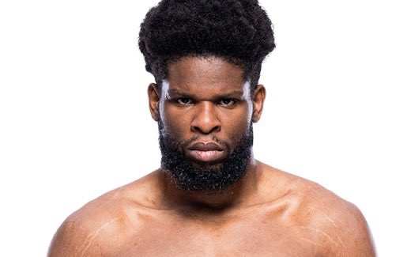
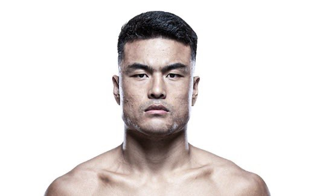
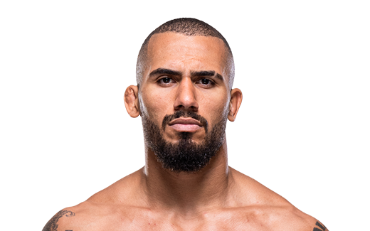

ケネディ・エンジーチュク
長身・長いリーチ まだ荒いが後々強くなる可能性 アルバーグをｋｏしたことがある

ジャン・ミンヤン
100%フィニッシャー 将来トップ戦線に絡んでくる可能性あり

ヴィトー・ペトリーノ
若さゆえの荒さもあるが、確かな実力 スタンドもグラウンドもできるフィニッシャー
長身・長いリーチ まだ荒いが後々強くなる可能性 アルバーグをｋｏしたことがある
100%フィニッシャー 将来トップ戦線に絡んでくる可能性あり
若さゆえの荒さもあるが、確かな実力 スタンドもグラウンドもできるフィニッシャー